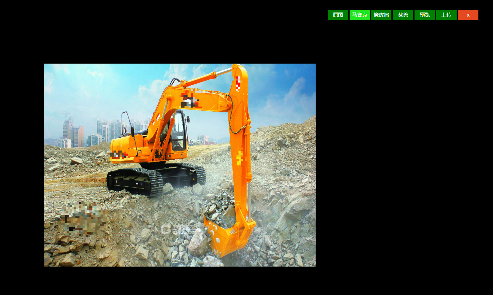

1.核心功能
此组件功能包含：
图片裁剪（裁剪框拖动，裁剪框改变大小）；
图片马赛克（绘制马赛克，清除马赛克）；
图片预览、图片还原（返回原图、返回处理图）；
图片上传（获取签名、上传图片）。
2.核心逻辑
2.1图片裁剪
获取裁剪框（矩形）相对于画布的位置（左上）和裁剪框的height、width。获取（getImageData）canvas相应位置的图片对象（ImageData）。清空canvas画布。在canvas画布的相应位置绘制（putImageData）获取的图片对象（ImageData）。生成预览图。
2.2图片马赛克
马赛克的绘制，就是在以鼠标划过路径（画笔宽度）为中心的区域，重新绘制成其他的颜色。一般结果是，会取周围的相近的颜色。
取色方法：
1）比如现有一鼠标划过的点的坐标（x,y），定义一个矩形左上角坐标取（x,y），宽30px，高30px。我们把矩形宽高都除以5（分成5份，可以自定义为n份），所以现在是25个6px的小格子。每个小格子宽高都是6px。
2）然后，我们随机获取一个小格子，获取（getImageData）这个小格子的图片对象（ImageData）；再随机获取此图片对象上某个像素点（宽1px，高1px）的颜色color（rgba：ImageData.data[0]，ImageData.data[1]，ImageData.data[2]，ImageData.data[3]）；最后我们把第一个6x6px的小格子的每个像素点的颜色都设置为color。
3）其他24个小格子的颜色，遍历2步骤即可。
2.3清除马赛克
我们需要理解一个问题，不管是绘制马赛克，还是清除马赛克，其本质都是在绘制图片。我们在某个位置绘制了马赛克，清除的时候，就是把原图在当前位置的图片对象再画出来。就达到了清除的效果。所以，我们需要备份一个canvas，和原图一模一样，清除的时候，需要获取备份画布上对应位置的图像，绘制到马赛克的位置。
2.4图片预览
图片预览就是获取裁剪框的区域，获取区域内的图片对象。再绘制到画布上。
2.5图片还原至原图
清空画布，再次绘制原图
2.6还原至已操作图片
预览是保存画布图片对象（ImageData），清空画布，绘制保存的图片对象至画布
2.7图片上传
获取（toDataURL）canvas图片路径，将获取到的base64图片转化为File对象。进行上传。
3.完整代码如下：
<template>
<div class="canvas-clip" :loading="loading">
<div
v-show="isDrop"
class="canvas-mainBox"
ref="canvas-mainBox"
id="canvas-mainBox"
@mousedown.stop="startMove($event)"
>
<div class="canvas-minBox left-up" @mousedown.stop="startResize($event,0)"></div>
<div class="canvas-minBox up" @mousedown.stop="startResize($event,1)"></div>
<div class="canvas-minBox right-up" @mousedown.stop="startResize($event,2)"></div>
<div class="canvas-minBox right" @mousedown.stop="startResize($event,3)"></div>
<div class="canvas-minBox right-down" @mousedown.stop="startResize($event,4)"></div>
<div class="canvas-minBox down" @mousedown.stop="startResize($event,5)"></div>
<div class="canvas-minBox left-down" @mousedown.stop="startResize($event,6)"></div>
<div class="canvas-minBox left" @mousedown.stop="startResize($event,7)"></div>
</div>
<!-- 画布 -->
<canvas
class="canvas-area"
ref="canvas"
id="canvas"
:width="canvasWidth"
:height="canvasHeight"
@mousedown.stop="startMove($event)"
:class="{hoverPaint:isMa,hoverClear:isMaClear}"
></canvas>
<!-- 备份画布 -->
<canvas class="canvas-copy" ref="canvasCopy" :width="canvasWidth" :height="canvasHeight"></canvas>
<div class="canvas-btns">
<button v-if="backBtn" @click="clipBack">返回</button>
<button :class="{active:btnIndex==0}" @click="sourceImg">原图</button>
<button :class="{active:btnIndex==1}" @click="paintRectReady" :disabled="isDisabled">马赛克</button>
<button :class="{active:btnIndex==2}" @click="paintRectClearReady" :disabled="isDisabled">橡皮擦</button>
<button :class="{active:btnIndex==3}" @click="clipReady" :disabled="isDisabled">裁剪</button>
<button :class="{active:btnIndex==4}" @click="clipPosition">预览</button>
<button @click="getSignature">上传</button>
<button class="close" @click="canvasClose()">x</button>
<!-- <div class="paint-size" v-if="isMaClear || isMa">
<span>画笔大小</span>
<input :defaultValue="maSize" v-model="maSize" max="100" min="1" type="range">
<span class="size-num">{{maSize}}</span>
</div> -->
</div>
</div>
</template>
<script>
import axios from "axios";
import md5 from "js-md5";
import req from "../../axios/config";
export default {
props: ["imgUrl"],
data() {
return {
resizeFX: "",
movePrev: "",
canvasWidth: 800, // 画布宽
canvasHeight: 600, // 画布高
loading: false,
isDrop: false, // 裁剪
isMa: false, // 马赛克
maSize: 30, // 马赛克大小
isMaClear: false, // 清除马赛克
backBtn: false, // 返回按钮
isDisabled: false,//禁用按钮
btnIndex: 0,//当前按钮
mouseX:'',// 鼠标位置
mouseY:'',
clipEle: "", // 裁剪框元素
canvasDataSession: "", // 预览前的画布信息
canvas: "", // 画布
ctx: "", // 画布上下文
canvasCopy: "", // copy画布
ctxCopy: "", // copy画布上下文
uploadOption: { // 图片上传参数
path: "",
policy: "",
signature: "",
username: ""
}
};
},
mounted() {
this.clipEle = this.$refs["canvas-mainBox"];
this.canvas = this.$refs["canvas"];
this.ctx = this.canvas.getContext("2d");
this.canvasCopy = this.$refs["canvasCopy"];
this.ctxCopy = this.canvasCopy.getContext("2d");
this.draw();
},
methods: {
// 创建图片
draw() {
var img = new Image();
img.setAttribute('crossOrigin', 'anonymous');
img.onload = () => {
this.ctx.drawImage(img, 0, 0, 800, 600);
this.ctxCopy.drawImage(img, 0, 0, 800, 600);
};
img.src = this.imgUrl + '?time=' + new Date().valueOf();
},
//预览 计算裁剪框的位置（左上坐标)
clipPosition() {
this.isDisabled = true;
this.backBtn = true;
this.isMa = false;
this.isMaClear = false;
this.btnIndex = 4;
//画布位置
var canvasPx = this.canvas.offsetLeft,
canvasPy = this.canvas.offsetTop;
if (this.isDrop) {
// 裁剪框位置
var clipPx = this.clipEle.offsetLeft,
clipPy = this.clipEle.offsetTop,
x = clipPx - canvasPx,
y = clipPy - canvasPy,
w = this.clipEle.offsetWidth,
h = this.clipEle.offsetHeight,
// 预览图居中
positionX = 400 - this.clipEle.offsetWidth / 2,
positionY = 300 - this.clipEle.offsetHeight / 2;
} else {
// 没有裁剪框，保存完整图片
var x = 0,
y = 0,
w = this.canvas.offsetWidth,
h = this.canvas.offsetHeight,
// 预览图居中
positionX = 0,
positionY = 0;
}
var imageData = this.ctx.getImageData(x, y, w, h);
this.canvasDataSession = this.ctx.getImageData(
0,
0,
this.canvasWidth,
this.canvasHeight
);
this.ctx.clearRect(0, 0, this.canvasWidth, this.canvasHeight);
this.ctx.putImageData(imageData, positionX, positionY);
this.clipEle.style.display = "none";
this.canvasCopy.style.display = "none";
},
// 返回预览前状态
clipBack() {
this.btnIndex = -1;
this.backBtn = false;
this.isDisabled = false;
this.isDrop = false;
this.ctx.putImageData(this.canvasDataSession, 0, 0);
this.canvasCopy.style.display = "block";
},
// 原图
sourceImg() {
this.isDisabled = false;
this.btnIndex = 0;
this.backBtn = false;
this.isMa = false;
this.isDrop = false;
this.isMaClear = false;
var img = new Image();
this.ctx.clearRect(0, 0, this.canvasWidth, this.canvasHeight);
img.setAttribute('crossOrigin', 'anonymous');
img.onload = () => {
this.ctx.drawImage(img, 0, 0, this.canvasWidth, this.canvasHeight);
};
img.src = this.imgUrl + '?time=' + new Date().valueOf();
this.canvasCopy.style.display = "block";
},
// 获取签名
getSignature() {
// canvas图片base64 转 File 对象
var dataURL = this.canvas.toDataURL("image/jpg"),
arr = dataURL.split(","),
mime = arr[0].match(/:(.*?);/)[1],
bstr = atob(arr[1]),
n = bstr.length,
u8arr = new Uint8Array(n);
while (n--) {
u8arr[n] = bstr.charCodeAt(n);
}
var obj = new Blob([u8arr], { type: mime }),
time = new Date().toGMTString(),
formData = new FormData();
formData.append("file", obj);
// 获取文件后缀
var suffix = formData.get("file").type.split("/")[1];
req
.get("/carsource-api/upyun/sign", { suffix: suffix })
.then(response => {
if (response.data.code === 0) {
this.uploadOption.path = response.data.data.path;
formData.append("policy", response.data.data.policy);
formData.append("authorization", response.data.data.signature);
this.updateImg(formData);
}
})
.catch(function(error) {});
},
// 上传
updateImg(formData) {
axios({
url: "http://v0.api.upyun.com/tmp-img",
method: "POST",
data: formData
}).then(response => {
if (response.data.code == 200) {
this.$message.success("图片修改成功");
this.canvasClose("upload", response.data.url.slice(4));
}
});
},
// 裁剪框缩放 移动
startResize(e, n) {
this.resizeFX = n;
$(document).mousemove(this.resizeDiv);
document.addEventListener("mouseup", this.stopResize);
},
stopResize(e) {
$(document).off("mousemove", this.resizeDiv);
document.removeEventListener("mouseup", this.stopResize);
},
startMove(e) {
this.movePrev = [e.pageX, e.pageY];
$(document).mousemove(this.moveDiv);
document.addEventListener("mouseup", this.stopMove);
},
stopMove(e) {
$(document).off("mousemove", this.moveDiv);
document.removeEventListener("mouseup", this.stopMove);
},
moveDiv(e) {
// 马赛克
if (this.isMa) {
this.paintRect(e);
}
// 清除马赛克
if (this.isMaClear) {
this.paintRectClear(e);
}
// 裁剪
if (this.isDrop) {
var targetDiv = $("#canvas-mainBox"),
offsetArr = targetDiv.offset();
var chaX = e.pageX - this.movePrev[0],
chaY = e.pageY - this.movePrev[1],
ox = parseFloat(targetDiv.css("left")),
oy = parseFloat(targetDiv.css("top"));
targetDiv.css({
left: ox + chaX + "px",
top: oy + chaY + "px"
});
this.movePrev = [e.pageX, e.pageY];
}
},
resizeDiv(e) {
e.preventDefault();
e.stopPropagation();
// 获取需要改变尺寸元素到页面的距离
var targetDiv = $("#canvas-mainBox"),
offsetArr = targetDiv.offset();
var eleSWidth = targetDiv.width(),
eleSHeight = targetDiv.height(),
ox = parseFloat(targetDiv.css("left")),
oy = parseFloat(targetDiv.css("top"));
// 获取鼠标位置，和元素初始offset进行对比，
var chaX = e.pageX - offsetArr.left,
chaY = e.pageY - offsetArr.top;
switch (this.resizeFX) {
case 0:
//如果移动距离接近宽度或高度，则不进行改变
if (chaX >= eleSWidth - 10 || chaY >= eleSHeight - 10) {
return;
}
// 获得位置差（m-e）,先设置宽度和高度，再设置位置
// 原始宽高+(（m-e）*-1)，原始位置+（m-e）
targetDiv.css({
width: eleSWidth + chaX * -1 + "px",
height: eleSHeight + chaY * -1 + "px",
left: ox + chaX + "px",
top: oy + chaY + "px"
});
break;
case 1:
//如果移动距离接近宽度或高度，则不进行改变
if (chaY >= eleSHeight - 10) {
return;
}
// 获得位置差（m-e）,先设置宽度和高度，再设置位置
// 原始宽高+(（m-e）*-1)，原始位置+（m-e）
targetDiv.css({
height: eleSHeight + chaY * -1 + "px",
top: oy + chaY + "px"
});
break;
case 2:
//如果移动距离接近宽度或高度，则不进行改变
if (chaX <= 10 || chaY >= eleSHeight - 10) {
return;
}
// 获得位置差（m-e）,先设置宽度和高度，设置位置
// 原始高+(（m-e）*-1),原始宽+(（m-e）)，原始位置+（m-e）
targetDiv.css({
width: chaX + "px",
height: eleSHeight + chaY * -1 + "px",
top: oy + chaY + "px"
});
break;
case 3:
//如果移动距离接近宽度或高度，则不进行改变
if (chaX <= 10) {
return;
}
// 获得位置差（m-e）,先设置宽度和高度，再设置位置
// 原始宽高+(（m-e）*-1)，原始位置+（m-e）
targetDiv.css({
width: chaX + "px"
});
break;
case 4:
//如果移动距离接近宽度或高度，则不进行改变
if (chaX <= 10 || chaY <= 10) {
return;
}
// 获得位置差（m-e）,先设置宽度和高度，再设置位置
// 原始宽高+(（m-e）*-1)，原始位置+（m-e）
targetDiv.css({
width: chaX + "px",
height: chaY + "px"
});
break;
case 5:
//如果移动距离接近宽度或高度，则不进行改变
if (chaY <= 10) {
return;
}
// 获得位置差（m-e）,先设置宽度和高度，再设置位置
// 原始宽高+(（m-e）*-1)，原始位置+（m-e）
targetDiv.css({
height: chaY + "px"
});
break;
case 6:
//如果移动距离接近宽度或高度，则不进行改变
if (chaX >= eleSWidth - 10 || chaY <= 10) {
return;
}
// 获得位置差（m-e）,先设置宽度和高度，再设置位置
// 原始宽高+(（m-e）*-1)，原始位置+（m-e）
targetDiv.css({
width: eleSWidth + chaX * -1 + "px",
height: chaY + "px",
left: ox + chaX + "px"
});
break;
case 7:
//如果移动距离接近宽度或高度，则不进行改变
if (chaX >= eleSWidth - 10) {
return;
}
// 获得位置差（m-e）,先设置宽度和高度，再设置位置
// 原始宽高+(（m-e）*-1)，原始位置+（m-e）
targetDiv.css({
width: eleSWidth + chaX * -1 + "px",
left: ox + chaX + "px"
});
break;
default:
break;
}
},
// 裁剪
clipReady() {
this.btnIndex = 3;
this.isMa = false;
this.isDrop = true;
this.isMaClear = false;
},
// 马赛克
paintRectReady() {
this.btnIndex = 1;
this.isMa = true;
this.isDrop = false;
this.isMaClear = false;
},
// 橡皮擦
paintRectClearReady() {
this.btnIndex = 2;
this.isMa = false;
this.isDrop = false;
this.isMaClear = true;
},
// 绘制马赛克
paintRect(e) {
var offT = this.canvas.offsetTop, // 距离上边距离
offL = this.canvas.offsetLeft, // 距离左边距离
x = e.clientX,
y = e.clientY;
if(this.mouseX - x > this.maSize/2 || x - this.mouseX > this.maSize/2 || this.mouseY - y > this.maSize/2 || y - this.mouseY > this.maSize/2){
var oImg = this.ctx.getImageData(x - offL ,y - offT,this.maSize,this.maSize);
var w = oImg.width;
var h = oImg.height;
//马赛克的程度，数字越大越模糊
var num = 6;
//等分画布
var stepW = w/num;
var stepH = h/num;
//这里是循环画布的像素点
for(var i=0;i<stepH;i++){
for(var j=0;j<stepW;j++){
//获取一个小方格的随机颜色，这是小方格的随机位置获取的
var color = this.getXY(oImg,j*num+Math.floor(Math.random()*num),i*num+Math.floor(Math.random()*num));
//这里是循环小方格的像素点，
for(var k=0;k<num;k++){
for(var l=0;l<num;l++){
//设置小方格的颜色
this.setXY(oImg,j*num+l,i*num+k,color);
}
}
}
}
this.ctx.putImageData(oImg,x - offL ,y - offT);
this.mouseX = e.clientX
this.mouseY = e.clientY
}
},
getXY(obj,x,y){
var w = obj.width;
var h = obj.height;
var d = obj.data;
var color = [];
color[0] = d[4*(y*w+x)];
color[1] = d[4*(y*w+x)+1];
color[2] = d[4*(y*w+x)+2];
color[3] = d[4*(y*w+x)+3];
return color;
},
setXY(obj,x,y,color){
var w = obj.width;
var h = obj.height;
var d = obj.data;
d[4*(y*w+x)] = color[0];
d[4*(y*w+x)+1] = color[1];
d[4*(y*w+x)+2] = color[2];
d[4*(y*w+x)+3] = color[3];
},
// 清除马赛克
paintRectClear(e) {
var offT = this.canvasCopy.offsetTop, // 距离上边距离
offL = this.canvasCopy.offsetLeft, // 距离左边距离
x = e.clientX,
y = e.clientY,
// 获取原图此位置图像数据
imageData = this.ctxCopy.getImageData(
x - offL,
y - offT,
this.maSize,
this.maSize
);
this.ctx.putImageData(imageData, x - offL, y - offT);
},
// 关闭画布
canvasClose(type, url) {
this.$emit("isShowImgChange", type, url);
}
}
};
</script>
<style scoped>
.canvas-clip {
position: fixed;
top: 0;
bottom: 0;
left: 0;
right: 0;
z-index: 9010;
background: #000;
}
.canvas-mainBox {
position: absolute;
width: 400px;
height: 300px;
left: 50%;
top: 50%;
margin-left: -200px;
margin-top: -150px;
border: 1px solid #FFF;
cursor: move;
z-index: 9009;
}
.canvas-minBox {
position: absolute;
width: 8px;
height: 8px;
background: #FFF;
}
.left-up {
top: -4px;
left: -4px;
cursor: nw-resize;
}
.up {
top: -4px;
left: 50%;
margin-left: -4px;
cursor: n-resize;
}
.right-up {
top: -4px;
right: -4px;
cursor: ne-resize;
}
.right {
top: 50%;
margin-top: -4px;
right: -4px;
cursor: e-resize;
}
.right-down {
bottom: -4px;
right: -4px;
cursor: se-resize;
}
.down {
bottom: -4px;
left: 50%;
margin-left: -4px;
cursor: s-resize;
}
.left-down {
bottom: -4px;
left: -4px;
cursor: sw-resize;
}
.left {
top: 50%;
margin-top: -4px;
left: -4px;
cursor: w-resize;
}
.canvas-btns {
position: fixed;
right: 50px;
top: 30px;
z-index: 9003;
}
.canvas-btns button {
display: inline-blovk;
background: green;
cursor: pointer;
border: none;
width: 60px;
height: 30px;
line-height: 30px;
color: #fff;
font-size: 15px;
}
.canvas-btns button.active {
background: rgb(32, 230, 32);
}
.canvas-btns button.close {
background: rgb(230, 72, 32);
}
.canvas-copy {
position: absolute;
top: 50%;
left: 50%;
margin-top: -300px;
margin-left: -400px;
z-index: 9007;
}
.canvas-mosatic {
position: absolute;
top: 50%;
left: 50%;
margin-top: -300px;
margin-left: -400px;
z-index: 9009;
}
.canvas-area {
position: absolute;
top: 50%;
left: 50%;
margin-top: -300px;
margin-left: -400px;
z-index: 9008;
}
.paint-size{
margin-top: 20px;
font-size: 13px;
color: #FFF;
height: 30px;
line-height: 30px;
text-align: right;
}
.paint-size input{
vertical-align: middle;
background: green;
}
.paint-size .size-num{
display: inline-block;
width: 15px;
}
.hoverClear{
cursor: url('./paint.png'),auto;
}
.hoverPaint{
cursor: url('./paint.png'),auto;
}
</style>
4.效果图如下：

5.组件是基于vue实现的，代码实现仓促，如有帮助或参考，请自行调试。欢迎留下意见和建议。